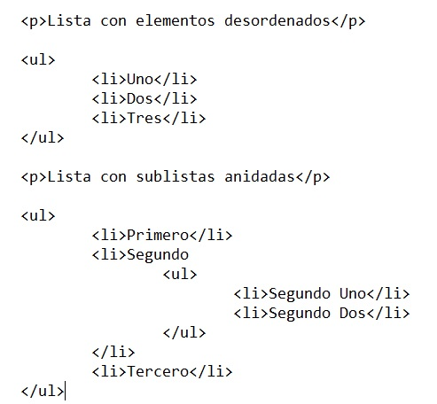

Imagine que tiene un documento donde maneja una considerable cantidad de información. Usualmente cuando existe esta situación, usted desea abreviar el tiempo para que cualquier persona encuentre más rápida y eficientemente cierto punto de interés entre toda la cantidad de información disponible, para lograr esto se recurre a elaborar algún tipo de lista (como un índice, por ejemplo).
En este punto se explorarán las posibilidades de HTML con respecto al uso de listas, como son: listas numeradas, conocidas también como listas ordenadas, listas no numeradas llamadas también listas no ordenadas y las listas de definición. También se aprenderá cómo anidar listas dentro de otras.
La etiqueta con cierre para listas no numeradas es <ul>, cada elemento de la lista utilizará un símbolo llamado bullet. Para listas numeradas se usa la etiqueta <ol>, aquí, a cada elemento de la lista le precederá un número. Al iniciar la lista se utiliza la etiqueta <ul> o bien la etiqueta <ol>, se coloca cada elemento de la lista delimitado por la etiqueta <li> y su cierre </li>, y de inmediato se cierran estas listas con </ul> o </ol> según sea el caso.
La etiqueta <ul>, permite definir una lista desordenada (“Unordered List”). Esta etiqueta es a su vez contenedora de otras etiquetas, siendo estas últimas las que componen cada uno de los elementos de los que está compuesta la lista.
Para especificar un elemento en la lista se ha de utilizar la etiqueta <li> >/li>, en la que se ha de especificar el texto que compone el elemento de la lista.
Una lista puede contener como elemento de lista, otra lista, es decir se pueden crear listas anidadas.
El siguiente ejemplo muestra el uso de la etiqueta en un documento web.
Lista con elementos desordenados
Lista con sublistas anidadas
La etiqueta <ol>, permite definir listas o viñetas ordenadas (“Ordered List”), bien con numeración o alfabéticamente. Esta etiqueta es a su vez contenedora de otras etiquetas, siendo estas últimas las que componen cada uno de los elementos de los que está compuesta la lista.
Para especificar un elemento en la lista se ha de utilizar la etiqueta <li> </li>, en la que se ha de especificar el texto que compone el elemento de la lista.
Una lista puede contener como elemento de lista, otra lista, es decir se pueden crear listas anidadas.
La sintaxis de la etiqueta es la siguiente:
Los atributos que pueda utilizar la etiqueta, aparte de los globales, son los siguientes.
El atributo type, permite especificar el tipo de orden que se de aplicar a la lista, estableciendo de esta forma que la lista se represente mediante diferentes tipos de numeración.
Los diferentes valores que puede recibir este atributo son los siguientes:

El atributo start, permite indicar el valor de inicio, por el cual ha de comenzar la lista ordenada, siendo este un valor numérico, en caso de ser la lista ordenada de forma alfabética, el valor de inicio que se exprese, se corresponderá con el orden el abecedario ASCII correspondiente.
La sintaxis de la etiqueta con el atributo es la siguiente:
El atributo reversed, permite indicar que la numeración u orden que se haya establecido se represente de forma inversa, si tuviéramos una lista con valor de inicio 1, 2, 3, sucesivamente, su representación al encontrarse este atributo seria 3,2,1.
Es un atributo con valor booleano, en caso de aparecer el atributo en la etiqueta se aplica el valor.
La sintaxis del atributo aplicado a la etiqueta es la siguiente:
El siguiente ejemplo muestra el uso de las listas ordenadas utilizando variaciones sobre la misma.
Lista ordenada numéricamente por defecto>/p>
Lista ordenada alfabéticamente
Lista con todos los atributos
La etiqueta <dl>, permite definir lo que se denominan, listas de definición, las cuales a su vez están compuestas por un término, y una definición.
Para realizar la lista se utilizan dos etiquetas más, la primera es <dt> </dt>, que permite especificar el termino en la lista. Y otra etiqueta <dd> </dd>, que permite especificar la definición.
La sintaxis de la lista con las etiquetas correspondientes, es la siguiente:
El siguiente ejemplo muestra el uso de la etiqueta, creando una lista de definición de términos.
Listas de definición
| Youtube | Tecnologico de Tlahuac | |||
|---|---|---|---|---|
|
|